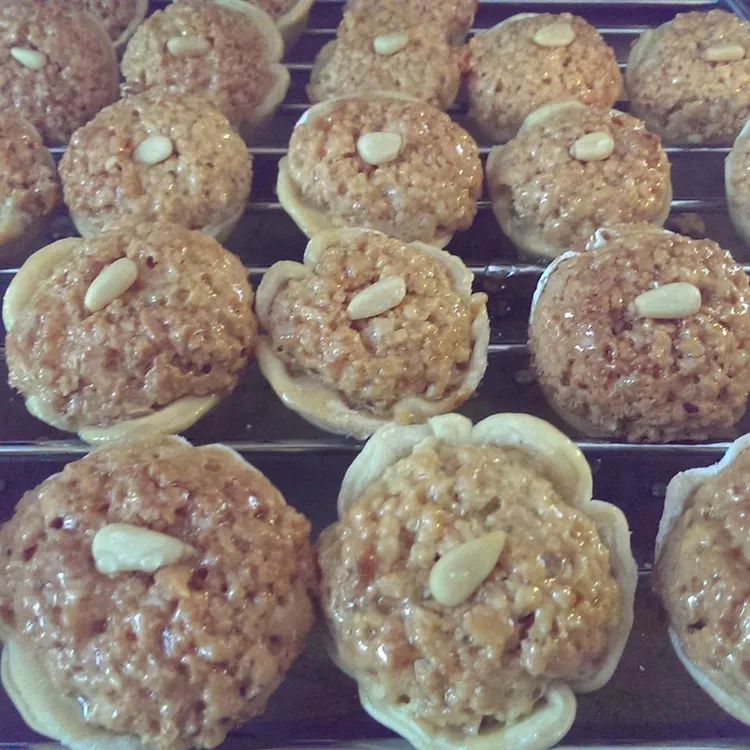

This recipe with all its variants is prepared only on special celebrations and weddings. It is a challenge to prepare, but is well worth the time and effort. There exist several varieties of this recipe. Some use molds while others are molded by hand, and some are dipped in syrup and others are not. The dough recipe may include butter instead of vegetable oil and sometimes egg is omitted. The goal is a non flaky, thin, and firm crust.
Prepare the almonds the day before. Bring 6 cups of water to a boil.
Remove from heat, and add the almonds. Let the almonds soak in
water for about 5 minutes, then drain and peel. Spread the almonds
on baking sheets, and bake at 200 degrees F(95 degrees C) until
completely dry and toasted. This takes several hours, and needs to
be prepared ahead. Be careful not to burn the nuts, as this will give a
bitter taste to the filling.
Add the sugar syrup, dough, and filling to a baking sheet.
Bake at 200 degrees F(95 degrees C) until completely dry and toasted.
Add the sugar syrup, dough, and filling to a baking sheet.
Bake at 200 degrees F(95 degrees C) until completely dry and toasted.
Add the sugar syrup, dough, and filling to a baking sheet.
Bake at 200 degrees F(95 degrees C) until completely dry and toasted.
Add the sugar syrup, dough, and filling to a baking sheet.
Bake at 200 degrees F(95 degrees C) until completely dry and toasted.
Add the sugar syrup, dough, and filling to a baking sheet.
Bake at 200 degrees F(95 degrees C) until completely dry and toasted.